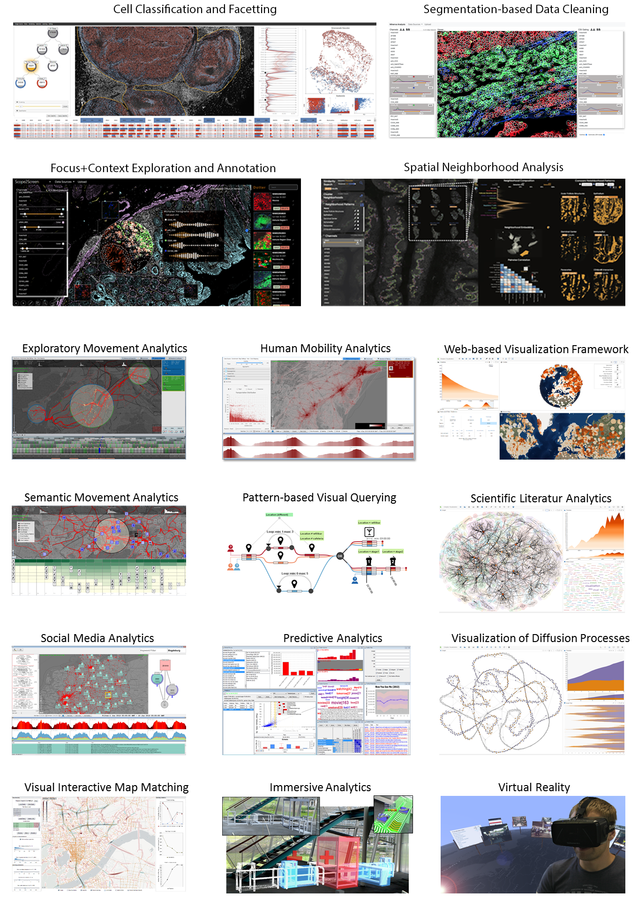

My research concerns the design and develop scalable visualization methods and integrate machine learning into visual interactive interfaces. My group's work enables human-in-the-loop data analysis of increasingly large and complex molecular data (imaging and spatial omics) acquired for biomedical research. We work closely with biomedical users to survey their goals and requirements, iteratively develop visualization prototypes, and conduct hands-on studies for qualitative and quantitative evaluation.
Visual analytics is an emerging research field to tackle big data analysis challenges. It creates added value by combining the processing power and accuracy of machines with human capabilities to perceive information visually. Automatic means are used to fuse and aggregate data and to detect hidden patterns. Interactive visualizations allow to explore and query the data and to steer automatic processes with domain knowledge. This increases trust in data, models, and results, which is especially important when critical decisions need to be made. The strengths of visual analytics have been shown to be particularly advantageous when problems and goals are underspecified and exploratory means are needed to discover yet unknown patterns.
Further research projects include the analysis of large-scale geographical (spatio-temporal) data, visual interfaces for steerable and interpretable ML, and immersive analytics approaches. You can find more information and links to my research papers in the publication section.
